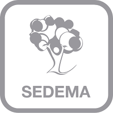
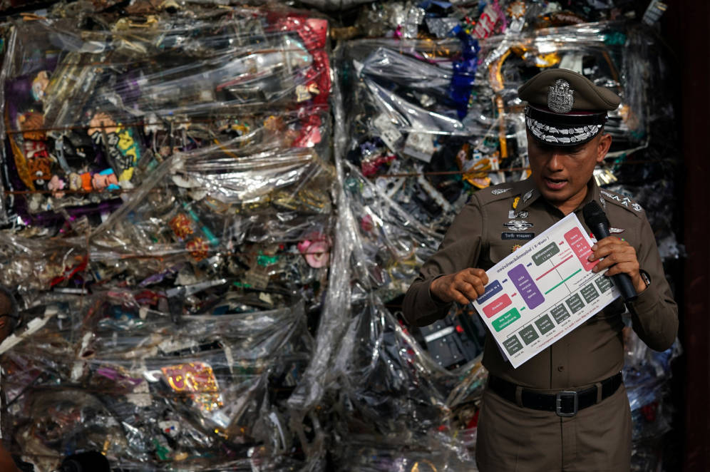
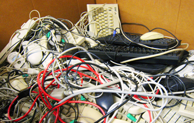

Sedema arranca actividades de verano |
|  |
|
Los talleres se impartirán, hasta el 5 de agosto, en los bosques de chapultepec, San Juan de Aragón y Tlalpan |
Olvídate de China: Tailandia ya es el nuevo vertedero electrónico del mundo |
|  |
|
La prohibición china de importar residuos tecnológicos ha hecho que la tecnobasura se desplace a otros países. En lugar de un problema, la junta militar tailandesa lo ha considerado una oportunidad |
El reciclaje de residuos eléctricos y electrónicos aumentó en 2017 |
|  |
|
La prohibición china de importar residuos tecnológicos ha hecho que la tecnobasura se desplace a otros países. En lugar de un problema, la junta militar tailandesa lo ha considerado una oportunidad |